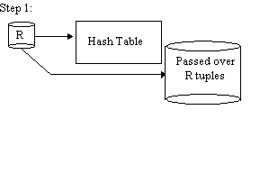
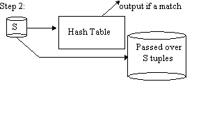
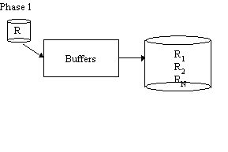
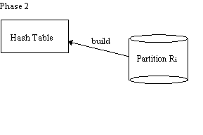
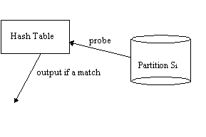
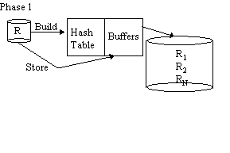
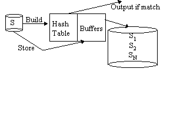

| Advanced Topics in Computer Systems |
|
| Joe Hellerstein & Timothy Roscoe |
|
Query Processing
Themes: Dataflow and Dataflow Operators
A quick primer on the relational algebra
- selection
- projection
- cartesian product
- union
- difference
- join (in particular, theta-join)
Dataflow Architecture: Iterators
Basic question: how do you turn the algebraic operator abstraction into a
programming construct? Iterators.
An OO view of iterators:
An iterator is a superclass for all dataflow operators. It has three
methods:
- open(): initialize state to set up dataflow.
- next(): produce a record as output
- close(): clean up state
The output type of next() is well typed. In a SQL system, this is a
SQL record in some schema, e.g. (integer, numeric(10,2), varchar, float).
Iterators are strung together into a dataflow by parameterizing them to
have other iterators as inputs, and then having their methods invoke the
input iterators' methods. Usually parent.open() invokes child.open()
and sometimes child.next(). Usually parent.next() invokes child.next()
or nothing. Usually parent.close() invokes child.close().
An iterator also has a number of private data members, including all the
"input" iterators it invokes (usually one or two of these), and any state
it maintains. The types of the records from input iterators need to
match the operator semantics in generating the output type. In a DBMS,
this is all set up automatically at query parsing/optimization time.
Extensible "optimizer generators" have been developed that let you declare
these rules in a high-level way (not as optimizer code).
A state-machine/event-handler view:
An iterator is an event handler for the events open/next/close/tuple-received.
The work in subclassing the iterator operator is to identify and maintain
the states that it can be in across next() events.
An eventflow graph is constructed to string together the dataflow, and
type matching of tuples needs to be managed as part of constructing that graph.
A note on Synchronous/Asynchronous (a.k.a. Pull/Push)
Typically, iterators in a single-site query processor make synchronous calls
to their children. This is a "pull" model, like sucking data through
a straw. For now, it's fine to think of iterators that way.
As we'll see later this semester, in some contexts it can be more efficient
to "push" the data between iterators (e.g. if there's a network in between!). This means that tuples
arrive asynchronously. Some kind of buffering and/or rate-matching has
to happen to keep operators in sync.
Typical DB Dataflow Operators
Unary Operations
Binary Operations: Union
Without duplicate elimination, a very simple iterator (SQL's "UNION ALL").
Only issue is that both inputs have to have identical schemas.
With duplicate elimination (SQL's plain "UNION"), you need to eliminate
duplicates too. Simple implementation: do UNION ALL as one iterator,
and dup-elim as another; make sure to use them in order if somebody wants
UNION without dups.
Binary Operations: Join
Join algorithms apply to almost any form of combining multiple collections,
except for UNION.
Some commonly used join variants (alternative logical algebra operators):
- semi-join: R semi-join S ~= R join remove-dups(S) projected to the
columns of R
- S basically serves as a filter
- logically, selection is a semijoin with an infinite relation (!!)
- outer join: R outer-join S: compute R join S, and for each tuple of
R that has no match send it to the output with the S columns filled in with
NULLs. Left, Right, and Full Outer Joins exist. Very common for web
apps. Some logical subtleties here (no longer commutative/associative).
- intersection & difference
These logical algebra operators can be implemented as minor variations on
the same join algorithms!
The "Guy Lohman Test" for join operators (a.k.a. pipelining of intermediate
results):
- does the operator work for joining 3 inputs without storing the output
of 2 of the inputs?
The "Joe Hellerstein Test" for join operators (a.k.a. full pipelining):
- does the operator produce outputs before it finishes reading any of
its inputs?
- how quickly -- and are they the juicy outputs?
Nested Loops Join
for each tuple r of R
for each tuple s of S
if rs satisfies join predicate
output rs
R is the outer relation (left)
S is the inner relation (right)
- works for any join predicate
- inner input must be stored
Refinement 1: Block Nested Loops Join
for each block BR of R
for each tuple s of S
for each tuple r of BR such that rs satisfies join predicate
output rs
Further refinements to nested loops:
- load R in chunks of M-K pages to amortize seek cost, "pin" K pages
of the inner into memory
- alternate scan direction on inner ("boustrophedonism")
Refinement 2: Index Nested Loops Join
for each tuple r of R
probe index over S;
output all s s.t. rs satisfies join predicate;
Notes:
- Still called "nested loops", S is still referred to as the "inner"
relation
- any join predicate can be supported if the index supports the predicate!
SELECT cities.name
FROM cities, forests
WHERE cities.boundary overlaps forests.boundary;
- can convert all nested-loops joins to index-nested-loops by indexing
inner on the fly. usually not worth it.
(Sort-)Merge Join
Works for equijoin, "band" joins
we will assume here you know how to do a 2-pass sort [see Knuth or Shapiro]
idea: if R & S are sorted on the join column(s), we can "simply" merge
them
But duplicates complicate things (as usual).
|
R
|
S
|
R join S
|
|
1
|
1
|
1,1
|
|
2
|
2
|
2,2
|
|
2
|
4
|
2,2
|
|
3
|
5
|
5,5
|
|
5
|
5
|
5,5
|
sort R;
sort S;
R.open();
S.open();
r = R.next();
s = S.next();
while (r != NULL && s != NULL) {
while (r.c < s.c)
r = R.next();
if (r.c = s.c) {
while (r.c = s.c) {
output rs;
r = R.next();
}
"rewind" r to first tuple of R where r.c = s.c;
s = S.next();
}
while (r.c > s.c)
s = S.next();
}
Refinement: do merging of R & S while merging sort runs from each.
- Requires enough buffers for merging both R and S simultaneously.
Note: Sort-merge is symmetric, so "outer", "inner", "left", "right" are arbitrary
Classic Hash Join
Works for equijoin only
Let R be the smaller relation
Hash R into VM;
for each tuple of S
probe hashtable over R and output all rs s.t. s.c = r.c
- In the spirit of indexed nested-loop join, S is "outer" (left), and
R is "inner" (right)
- Warning: at least one important paper calls S the right relation,
R the left!!!
- I prefer to call S left/outer, R right/inner
- note that hash join is very similar to nested-loop + index-on-the-fly
(which Sybase used to do.) If we call the probing relation there the
"outer", we should do the same here!
- Safest to refer to "building" and "probing" relations
Simple Hash Join


Repeat steps 1 and 2 with R, S replaced by the passed over tuples.
Advantages:
- Great when R is small
- Works for memory of any size
Disadvantages:
Grace Hash Join

Phase 1 is repeated with S in place of R

THEN 
Advantages:
- works well for big R, esp. when RAM is just big enough for output buffers
of R
Disadvantages:
Hybrid Hash
Original paper: DeWitt, Katz, Olken, Shapiro, Stonebraker, Wood, SIGMOD '84.


Phase 2 as in Grace Join
Hybrid Hash Advantages:
- As good as simple hash for small R
- As good as Grace for big R
- If RAM is bigger than # of output buffers, improves on Grace
Disadvantages:
Handling Partition Overflow:
- If a partition of R overflows, recursively partition it, along with
the corresponding bucket of S
- Note that size of S does not affect level of recursion!
- Makes hash-join particularly effective if |R| << |S| (compare
to sort-merge)
Additional Tricks: Filters
Idea: build a filter based on R so you stage less of S to disk